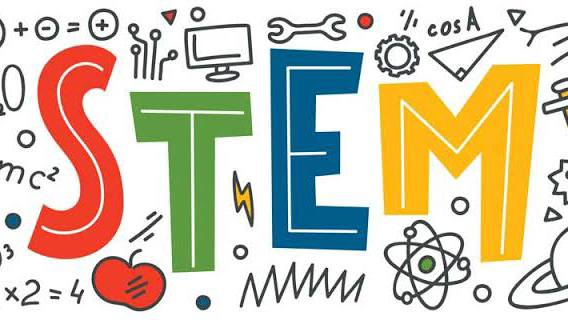

STEM
What is STEM?
Designed to prepare students who express keen interest in taking college degrees focused on Science, Technology, Engineering, and Mathematics (STEM), senior high school students will be exposed to learning activities that will hone their knowledge and skills in analyzing data, understanding real-world impacts, and conducting research.